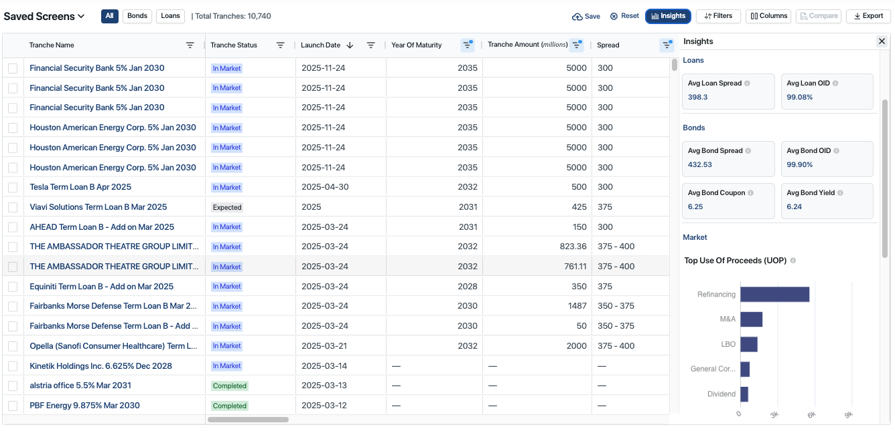

Product

Deal Screener
Problem:
- Clients struggled to efficiently find investment opportunities across bonds and loans.
Solution:
- Led the 0 to 1 launch of a Deal Screener tool enabling clients to seamlessly search, analyze, and compare deals in one place.
Results:
- 90% of beta users adopted the saved screen feature within two weeks
- Reduced search time by 40% for power users, streamlining their workflow
- Received overwhelmingly positive customer satisfaction during beta testing

CS Dashboard
Problem:
- Clients lacked an efficient way to understand the performance and risk of their portfolios.
Solution:
- Led the end-to-end launch of a Portfolio Dashboard, delivering an intuitive interface for clients to monitor performance, assess risk, and gain actionable insights into their portfolio.
Results:
- Achieved 50% adoption within first 2 weeks
- Average of 4+ views per user, demonstrating high engagement and retention
- Received outstanding feedback in post-launch customer interviews